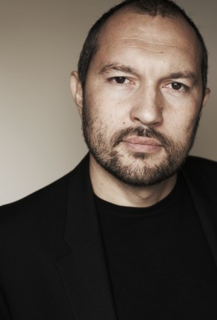

#6334 A Cure for Wellness

 IMDB-Wertung: 6.5 / 10
IMDB-Wertung: 6.5 / 10  Metascore: 0
Metascore: 0 
Weil der CEO der Firma, in der er arbeitet, viel zu lange in einem Wellness-Center in den Schweizer Alpen verweilt, macht sich der ehrgeizige junge Angestellte Mr. Lockhart auf nach Europa, um seinen Chef Mr. Pembroke zurückzuholen. Dort angekommen, stellt er bald fest, dass die Einrichtung nicht der idyllische Heiltempel ist, als der sie sich nach außen hin darstellt. Weil er zu viele Fragen stellt, diagnostiziert das Personal schließlich auch Lockhart mit der seltsamen Krankheit, die hier alle Patienten festzuhalten scheint. Unter Direktion des rätselhaften Spa-Leiters Volmer beginnt die Behandlung und sein Verstand wird auf die Probe gestellt. Gemeinsam mit Langzeitpatientin Hannah stellt Lockhart jedoch gleichzeitig weiterhin Nachforschungen an, um dem Geheimnis der Einrichtung auf den Grund zu gehen…
Jahr: 2016
Dauer: 146 Minuten
FSK: 16
Land: USA Studio: 20th Century FoxTonspuren:
Untertitel: Deutsch,
Auflösung: 1080p (1920x1080) Größe: 6860 MB
Genre: Thriller, Horror, Drama, Sci-Fi, Fantasy, Mystery
Regisseur:  Gore Verbinski
Gore Verbinski
Drehbuch: Nicole Holofcener
Soundtrack:
Darsteller:
 Dane DeHaan als Lockhart
Dane DeHaan als Lockhart Jason Isaacs als Volmer
Jason Isaacs als Volmer Mia Goth als Hannah
Mia Goth als Hannah-  Ivo Nandi als Enrico
 Adrian Schiller als Deputy Director
Adrian Schiller als Deputy Director Celia Imrie als Victoria Watkins
Celia Imrie als Victoria Watkins Harry Groener als Pembroke
Harry Groener als Pembroke- Tomas Norström als Frank Hill
 Magnus Krepper als Pieter The Vet
Magnus Krepper als Pieter The Vet- Peter Benedict als Constable
- Craig Wroe als Morris
 David Bishins als Hank Green
David Bishins als Hank Green- Lisa Banes als Hollis
 Carl Lumbly als Wilson
Carl Lumbly als Wilson- Tom Flynn als Humphrey
- Eric Todd als Josh
- Jason Babinsky als Carl
 Johannes Krisch als Caretaker
Johannes Krisch als Caretaker- Rebecca Street als Lockhart's Mother
- Leonard Kunz als Frank
- Manon Kahle als Secretary
 Jeff Burrell als Funeral Director
Jeff Burrell als Funeral Director Godehard Giese als Volmer Institute Staff
Godehard Giese als Volmer Institute Staff- Judith Hoersch als Volmer Institute Staff
- Angelina Häntsch als Volmer Institute Staff
- Annette Lober als Volmer Institute Staff
- Susanne Wuest als Volmer Institute Staff
- Natalia Bobrich als Nurse , uncredited
- Matt Lindquist als , uncredited
 Chris Theisinger als Wallstreet Broker , uncredited
Chris Theisinger als Wallstreet Broker , uncredited- Ashok Mandanna als Ron Nair
 Michael Mendl als Bartender
Michael Mendl als Bartender- Maggie Steed als Mrs. Abramov
- Bert Tischendorf als Lockhart's Father
- Douglas Hamilton als 9 Year Old Lockhart
- Daniel Michel als Denim
- Luzie Scheuritzel als Bar Girl
- Natascha Lawiszus als Bar Girl
- Sophie Charlotte Conrad als Bar Girl
- Adrian Zwicker als Conductor
- Julia Graefner als Vet's Daughter
- Nino Boehlau als Drawing Boy
- Nadine Boeske als Volmer Institute Staff
- Axel Buchholz als Volmer Institute Staff
 David Bredin als Volmer Institute Staff
David Bredin als Volmer Institute Staff- Matthias Britschgi als Volmer Institute Staff
- Andreas Dobberkau als Volmer Institute Staff
- Sarah Franke als Volmer Institute Staff
- Caspar Kaeser als Volmer Institute Staff
- Sebastian Kaufmane als Volmer Institute Staff
Datei: X:\2016(A-F)\Cure for Wellness, A (2016, FSK16, 1920x1080).mkv seit 08.06.2017
Festplatte: HD 2016(A-Z)
 Es gibt insgesamt 147 Filme in der Gruppe '2016(A-F)'
Es gibt insgesamt 147 Filme in der Gruppe '2016(A-F)'